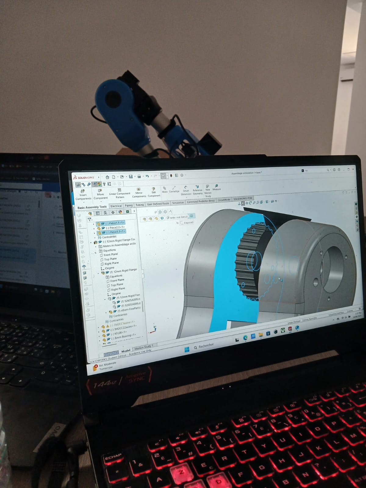
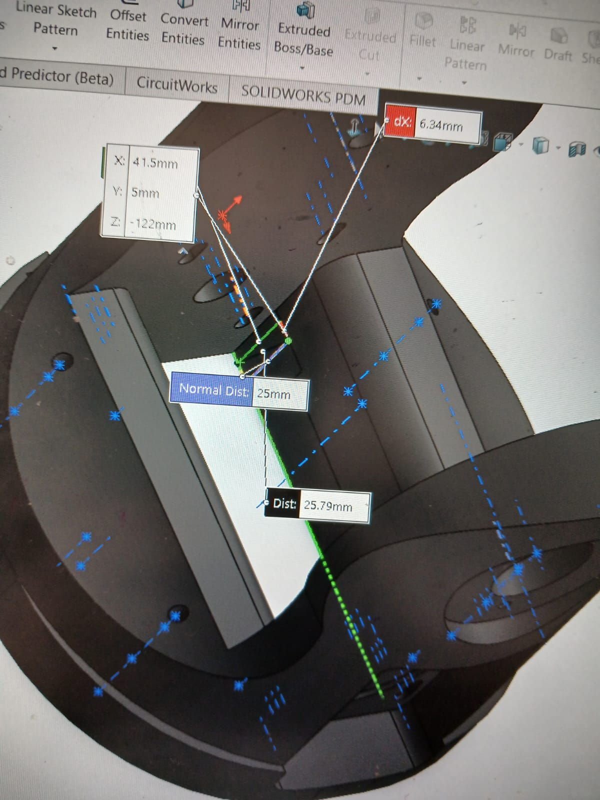

KTIX‑LAB
Robotics Design Engineer - Academic Project
Project Name
5-Axis Robotic Arm Design & Optimization
Description
As part of an academic project at Ktix-Lab, I designed and optimized a 5-axis robotic arm through analysis and sizing using SolidWorks. The project focused on creating an efficient and cost-effective robotic solution for industrial applications.

Technologies Used
Key Achievements
- Designed a 5-axis robot through analysis and sizing using SolidWorks
- Optimized mechanical design, reducing production costs by 30%
- Simulated cable routing in SolidWorks and implemented homing with reference marks
- Applied technical stack: Mechanical Design, SolidWorks, Cost Optimization, Prototyping
Image / Demo


5-Axis robot CAD model and assembly
Challenges
- Balancing structural integrity with weight reduction
- Optimizing production costs while maintaining performance
- Implementing efficient cable management in constrained spaces
- Ensuring precise homing and reference positioning
Outcome
The project resulted in a fully designed 5-axis robotic arm with the following achievements:
- 30% reduction in production costs through design optimization
- Complete CAD model with detailed assembly instructions
- Efficient cable routing solution minimizing interference
- Precise homing system with reference markers